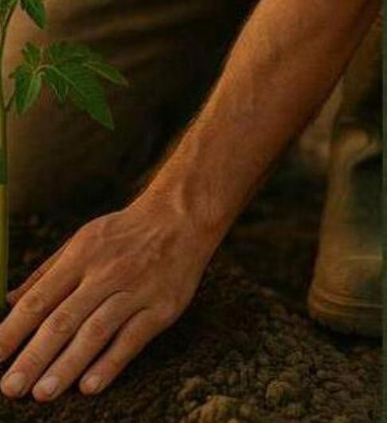

The Ethos
Regeneration begins with alignment — restoring soil health, nervous system balance, and the natural intelligence that sustains all living systems.
Healing is not solitary. It's a shared table — an ecosystem of people, plants, and purpose working together for the whole.
True sustainability is exchange — giving back what we take, enriching what nourishes us.
Every ecosystem communicates — through soil health, climate patterns, and the human body. Restoration begins when we learn to respond to those signals.
Nature operates in cycles of growth, rest, and renewal. By designing in harmony with those rhythms, we create systems that sustain rather than deplete.
Impact + Vision

Restore fertility, biodiversity, and balance through regenerative farming, permaculture design, and conscious stewardship — creating ecosystems that feed people, rebuild soil, and sustain future harvests.
Reconnect people to their biological intelligence — promoting vitality, focus, and longevity through nutrient-dense meals, embodied education, and ancestral culinary practices.
Foster a culture of reciprocity — cultivating communities, businesses, and partnerships that align with nature's rhythm and redefine prosperity through regeneration.